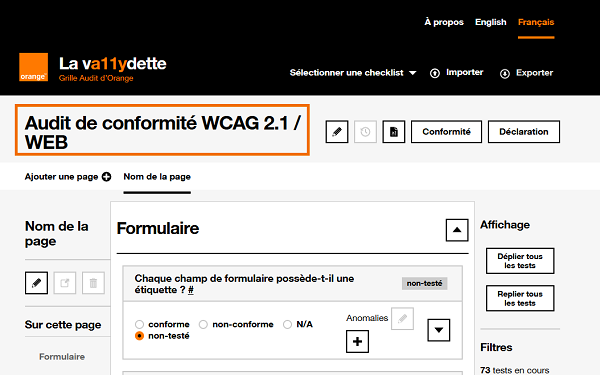
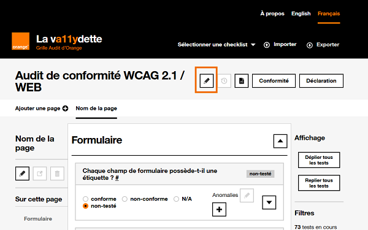
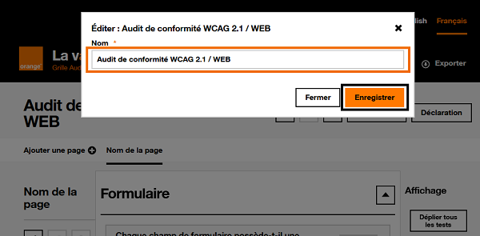
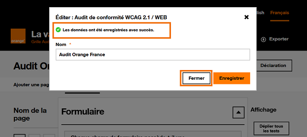
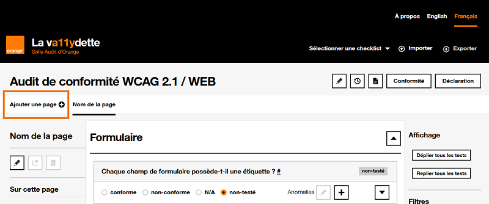
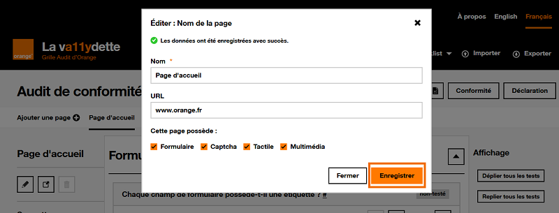
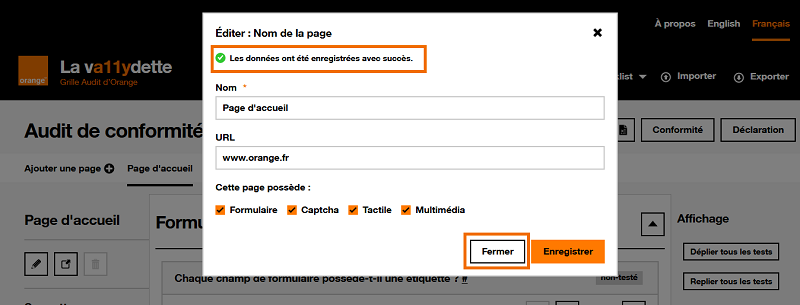
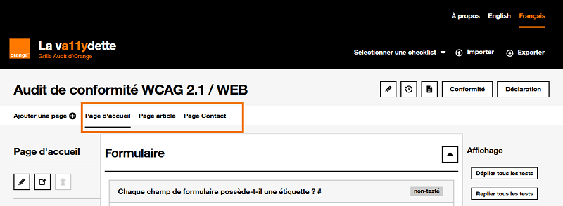
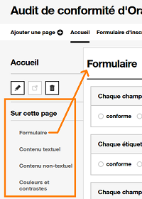
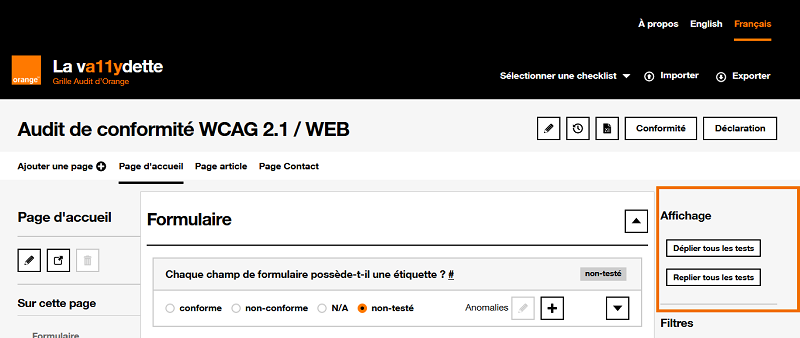

La va11ydette : le guide utilisateur
1. Introduction : Pourquoi La va11ydette ?
La va11ydette est une application web qui propose des grilles d'évaluations et des listes de questions / réponses, facilitant les audits d'accessibilité numérique.
Elle prend en charge le référentiel WCAG 2.2. Les grilles d'évaluations sont divisées en trois catégories ; Web, Android et IOS. Le référentiel RGAA 4.1 est aussi disponible.
Une fois que vous aurez fini de répondre à la grille d'évaluation choisie, un taux de conformité sera calculé pour votre audit.
Le but de ce guide utilisateur est de vous montrer toutes les fonctionnalités disponibles et de vous aider à compléter votre audit.
2. Utiliser La va11ydette
2.1 Créer un nouvel audit
- Pour créer un nouvel audit, choisissez une grille d'évaluation qui
correspond à ce que vous voulez tester :
- soit sur la page d'accueil en cliquant sur la grille voulue
- soit dans le menu "Sélectionner une checklist située dans le header du site
- L'audit est créé. Son nom par défaut est celui de la grille d'évaluation sélectionnée. 
- Nous vous recommandons de modifier le nom par défaut de l'audit.
Pour cela :- Cliquer sur le bouton situé juste après le titre de l'audit. 
- Dans la modale qui s’ouvre, remplacer le nom par défaut de l’audit par le nom que vous souhaitez lui donner puis cliquer sur le bouton « Enregistrer ». 
- À la suite du clic sur le bouton « Enregistrer », un message de
confirmation de la
modification du nom de l’audit s’affiche dans la modale.
À savoir : la modale ne se ferme pas automatiquement. Pour cela, vous devez cliquer sur le bouton « Fermer ». 
2.2 Les pages
2.2.1 Ajouter des pages
Pour votre audit, il est important de sélectionner un échantillon de pages. Vous allez donc avoir besoin d'une grille d'évaluation par page de l'application à auditer.
Pour générer une grille d'évaluation dédiée à une page de l'application, il faut :
- Cliquer sur le bouton "Ajouter une page". 
- Indiquer dans la modale qui s'affiche :
- le nom que vous souhaitez donner à cette page
- son url dans l'application à auditer (cela vous permettra d'y accéder plus facilement)
- la présence dans la page des différentes catégories d'éléments indiquées, en cochant ou décochant les différentes cases proposées.
- Cliquer sur le bouton "Enregistrer" pour générer la nouvelle page. 
- Suite au clic sur le bouton "Enregistrer", un message de confirmation de
la création de la page s'affiche dans la modale.
À savoir, la modale ne se ferme pas automatiquement. Pour cela vous devez cliquer sur le bouton "Fermer".  - La page d'audit ainsi créée apparait dans le menu situé sous le titre de l'audit.
Lorsque plusieurs pages ont été créées dans l'audit, vous pouvez passer de l'une à l'autre en cliquant sur son nom : 
2.2.2 Gérer une page de l'audit
Toutes les fonctionnalités de la page sont décrites dans la liste ci-dessous :
-
bouton qui permet de modifier le nom de la page et son URL.
-
bouton qui permet d'ouvrir l'URL de la page dans un nouvel onglet. Ce bouton sera désactivé si aucune URL n'est renseignée.
- bouton qui permet de supprimer la page. À noter : il est impossible de supprimer la première page de l'audit.
-
section "Sur cette page": menu de navigation qui permet d'aller directement sur chacune des différentes catégories de critères de la grille d'évaluation présentes sur la page.
 -
section "Affichage": deux boutons permettant de déplier ou replier l'ensemble des critères de la grille d'évaluation. Les déplier permettra d'afficher toutes les informations pour valider ou invalider un critère.
 -
filtres : ensemble de filtres permettant de modifier les critères affichés sur la page. Il est possible de choisir d'afficher :
- Les critères en fonction de leurs résultats (conforme, non-conforme ...).
- Les critères de bonnes pratiques (à noter : ces critères ne sont pas pris en compte lors du calcul du taux de conformité).
- Les critères selon la norme WCAG.
2.3 Les critères de la grille d'évaluation
Chaque page créée dans l'audit contient un certain nombre de critères d'accessibilité à évaluer. La liste des critères présents dépend de la grille d'évaluation choisie.
Chaque critère d'accessibilité est composé :
- d'une question permettant d'évaluer un critère d'accessibilité donné
- de boutons radio permettant d'indiquer l'état du critère (conforme, non-conforme, non-applicable, non-testé).
- des boutons permettant d'ajouter , et de modifier une anomalie (critère non respecté).
-
d'un bouton permettant d'afficher les informations supplémentaires du critère
 .
Ces informations supplémentaires expliquent plus en détails comment valider ou invalider le critère.
.
Ces informations supplémentaires expliquent plus en détails comment valider ou invalider le critère.Dans les informations supplémentaires, il y a une case à cocher "Appliquer automatiquement ce résultat à la page suivante". Cette fonctionnalité peut vous être utile lorsque vous trouvez une erreur concernant un élément qui se retrouve dans plusieurs pages du site de votre audit. En cochant cette case, le résultat donné au critère dans cette page sera automatiquement appliqué à ce même critère dans la page suivante de votre audit (en respectant l'ordre des pages telles qu'elles sont présentées dans la barre de navigation des pages). Les anomalies seront aussi copiées.
Si des pages sont créées après avoir coché cette case, ce même critère dans les nouvelles pages récupèrera également automatiquement le résultat qu'il lui a été donné dans les pages précédentes, de mêmes que ses anomalies.
Le numéro WCAG auquel le critère est rattaché sera affiché dans les informations supplémentaires, si ce critère est un critère d'accessibilité
2.3.1 Ajouter une anomalie
Lorsqu'un critère évalué est considéré comme non-conforme, il est important d'ajouter une anomalie pour ce critère. Cela vous permettra de retrouver facilement les non-conformités relevées sur les différentes pages auditées.
Pour ajouter une anomalie :
- Cliquer sur le bouton .
- Dans le formulaire de la modale qui apparait :
-
Sélectionner dans la liste déroulante "sélectionner une anomalie pré-définie" l'une des anomalies prévues pour ce critère. À savoir : pour certains critères, il n'y a pas d'anomalies prévues.
Cliquer sur le bouton "Importer" pour préremplir en conséquence les autres champs du formulaire. Vous pourrez ensuite si besoin modifier et adapter les informations préremplies.
- Dans le champ obligatoire "résumé", écrire un bref descriptif de l'anomalie.
- Dans le champ obligatoire "description", écrire une description complète de l'anomalie. Le but est de laisser une information qui permettra de retrouver rapidement l'anomalie qui a entrainé la non-conformité, il faut donc être le plus précis possible.
- Dans le champ facultatif "solution", vous pouvez indiquer ce qui aiderait ou permettrait de corriger la non-conformité.
- Dans le champ facultatif "solution technique", indiquer, si cela est possible, le code qui permet de corriger la non-conformité.
-
2.3.2 Modifier ou supprimer une anomalie
Il est possible de modifier ou supprimer chaque anomalie créée. Pour cela, cliquer sur le bouton "Éditer une anomalie".
2.4 Sauvegarder un audit
Il existe deux façons de sauvegarder son audit en cours :
-
Sauvegarde automatique : vos 8 derniers audits sont sauvegardés automatiquement dans le stockage local (local storage) de votre navigateur.
Cette solution n'est pas la plus sûre car vous pouvez perdre vos données si vous effacez le cache de votre navigateur ou si vous faites beaucoup d'audits.
Attention, la sauvegarde automatique ne fonctionne pas en navigation privée.
-
Export de l'audit au format JSON : pour cela, cliquez sur le bouton "Exporter" situé dans le header de La va11ydette et enregistrer le fichier sur votre ordinateur.
2.5 Restaurer un audit
Vous pouvez récupérer dans La va11ydette les données d'un audit précédemment sauvegardé. Il y a deux manières de faire, qui correspondent chacune à la manière dont l'audit a été sauvegardé (voir la section 2.4 Sauvegarder son audit en cours).
- Audits sauvegardés automatiquement dans le navigateur :
- Pour y accéder, cliquez sur le bouton situé à droite du nom de l'audit.
- Une modale s'ouvrira avec la liste des audits sauvegardés, choisissez l'audit à restaurer parmi ceux proposés et cliquer sur le bouton "Restaurer".
- À savoir : c'est ici aussi que vous avez accès à la suppression d’un audit sauvegardé dans le navigateur.
- Audits sauvegardés dans un fichier exporté au format JSON
- Pour y accéder, cliquez sur le bouton "Importer" situé dans le header de La va11ydette.
- Un champ caché apparaitra. Cliquer sur "Parcourir" et sélectionner sur votre ordinateur le fichier d'export de l'audit à récupérer dans La va11ydette. Cliquez ensuite sur le bouton "Charger l'audit".
2.6 Afficher le récapitulatif
Pour afficher un récapitulatif chiffré de votre audit, cliquer sur le bouton "Conformité" situé à droite du titre de l'audit.
Le récapitulatif contient :
- le taux de Conformité globale, c'est la moyenne des mesures de chaque page.
- le taux de Critères respectés, il s'obtient en divisant le nombre de critères conforme par le nombre de critères applicables (critères notés « conformes » + critères notés « non conformes »).
- 4 onglets :
- Onglet "Résultats par page" : affiche la liste des pages créées dans l'audit avec pour chacune son nom, son pourcentage de conformité et son URL.
- Onglet "Taux de conformité par page" (seulement disponible pour les grilles d'évaluations WCAG) : onglet qui récapitule les critères A et AA de chaque page
- Onglet "Synthèse par niveaux" (seulement disponible pour les grilles d'évaluations WCAG) : onglet qui récapitule les critères conformes/non-conformes/non-applicables
- Onglet "Liste des non-conformités" : indique tous les critères non-conformes et le résumé des anomalies.
2.7 Générer la déclaration
Une fois tous les critères d'accessibilité évalués pour chacune des pages, vous pouvez générer une déclaration d'accessibilité.
À savoir : La possibilité de générer cette déclaration n'est actuellement pas disponible pour les grilles d'évaluation RGAA.
Cette déclaration sera générée sous la forme d'un fichier au format XML ou au format HTML. La déclaration d'accessibilité devra être publiée sur le site audité dans un format accessible.
Voici les étapes à suivre pour générer le fichier de déclaration d'accessibilité :
-
Cliquer sur le bouton "Déclaration". Une page "Configuration de la déclaration" s'affiche. Cette page contient un formulaire destiné à collecter les informations que l'on souhaite voir figurer sur la déclaration d'accessibilité.
Aussi, ce n'est qu'une fois les champs du formulaire renseignés qu'il sera possible de générer le fichier de la déclaration.
- Remplir le formulaire. Deux manières de faire sont possibles :
-
Renseigner manuellement tous les champs demandés en allant directement dans la section "2. Compléter les données" pour y saisir vous-même les informations demandées, à savoir :
- Nom du projet : indiquer le nom du projet que vous venez d'auditer
- Langue : choisir la langue dans laquelle la déclaration doit être générée
- Date : indiquer la date à laquelle l'audit a été réalisé
- Type de résultat : choisir le type de mesure de conformité à afficher sur la déclaration
- Déclarant : choisir l'entité qui a réalisé l'audit et son siège social. Attention : il est important de modifier les informations du déclarant en cliquant sur le bouton , situé à côté du titre. Une modale s'ouvrira avec deux champs : le nom et le contenu du déclarant. Le contenu sera le texte affiché sur la déclaration
- Contact : choisir le contact à faire apparaitre sur la déclaration afin de permettre aux utilisateurs de faire des retours sur l'accessibilité du site. Attention : il est important de modifier les informations du déclarant en cliquant sur le bouton , situé à côté du titre. Une modale s'ouvrira avec deux champs : le nom et le contenu du contact. Le contenu sera le texte affiché sur la déclaration
- Schéma pluriannuel : indiquer un lien vers le schéma pluriannuel. Le contenu de ce champ sera le texte affiché sur la déclaration. Il faut donc faire des phrases qui introduisent le schéma pluriannuel.
- Technologies : indiquer la liste des technologies utilisées sur le site audité. Une liste de technologies est proposée par défaut. Si elle ne convient pas en l'état, cliquez sur le bouton , situé à côté du titre, pour la modifier.
- Tests : indiquer la liste des outils de test utilisés pendant votre audit. Une liste d'outils est proposée par défaut. Si elle ne convient pas en l'état, cliquez sur le bouton , situé à côté du titre, pour la modifier.
- Environnements : indiquer les environnements sur lesquels le site a été audité, par exemple Firefox v78.15 et NVDA v2022.1. Une liste d'environnements est proposée par défaut. Si elle ne convient pas en l'état, cliquez sur le bouton , situé à côté du titre, pour la modifier.
- Tests utilisateurs : indiquer si des tests utilisateurs ont été effectués. Préciser le nombre d'utilisateusr, le nombre de points bloquants qui ont été identifiés, et ajouter une description de ce qui a été testé (caractéristiques des utilisateurs testé, outils utilisés, taches demandées…)
- Dérogation et Exemption : des contenus non accessibles qui sont soumis à une dérogation pour charge disproportionnée. Chaque dérogation ou exemption mentionnée doit être expliquée et motivée
Une fois ces champs renseignés, vous pouvez sauvegarder les données que contient le formulaire de deux manières :
- En cliquant sur le bouton "Enregistrer" : les informations saisies dans le formulaire sont enregistrées afin de générer la déclaration.
- En cliquant sur le bouton "Enregistrer et télécharger au format JSON" : il a la même utilité que le bouton "Enregistrer", sauf qu'il téléchargera en plus un fichier au format JSON. Vous pourrez utiliser ce fichier lors de vos prochaines déclarations pour préremplir le formulaire en l'important dans la section "1.Préremplir le formulaire". Cela vous permettra de gagner du temps.
- Préremplir les champs du formulaire de cette page, vous pouvez
utiliser cette option et ainsi gagner du temps seulement si vous avez téléchargé un fichier JSON du
formulaire préalablement remplis. Si c'est le cas :
- Aller dans la section « 1. Préremplir le formulaire
- Cliquer le bouton "Choisir un fichier" et sélectionner le fichier JSON qui contient les informations préremplies du formulaire.
- Cliquer sur le bouton "Importer". Les champs de la partie "2. Compléter les données" sont automatiquement préremplis avec les informations présentes dans le fichier JSON importé.
- Vérifier et modifier les informations préremplies
- Enregistrer le formulaire
-
- Générer le fichier de déclaration d'accessibilité, avec les informations
renseignées :
- Allez dans la section "Déclaration"
-
Choisir le format dans lequel générer le fichier de déclaration, en cliquant sur le bouton "XML" ou "HTML".
À savoir : vous ne pourrez générer une déclaration que lorsque l'audit sera terminé et le formulaire de la déclaration rempli. Les boutons ne seront pas disponibles dans le cas contraire.
2.8 Exporter au format Excel
Il est aussi possible de faire un export au format Excel  .
.
Toutes les anomalies renseignées pendant votre audit seront présentes dans le fichier Excel. Cela peut être utile pour faire du suivi de corrections si vous souhaitez accompagner un projet.